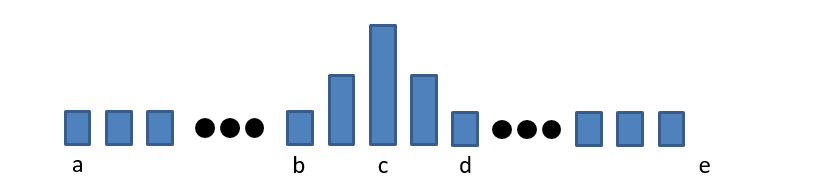

Frodo and pillows
n hobbits are planning to spend the night at Frodo’s house. Frodo has n beds standing in a row and m pillows (n ≤ m). Each hobbit needs a bed and at least one pillow to sleep, however, everyone wants as many pillows as possible. Of course, it’s not always possible to share pillows equally, but any hobbit gets hurt if he has at least two pillows less than some of his neighbors have.
Frodo will sleep on the k-th bed in the row. What is the maximum number of pillows he can have so that every hobbit has at least one pillow, every pillow is given to some hobbit and no one is hurt?
Input:
The only line contain three integers n, m and k (1 ≤ n ≤ m ≤ 109, 1 ≤ k ≤ n) — the number of hobbits, the number of pillows and the number of Frodo’s bed.
Output:
Print single integer — the maximum number of pillows Frodo can have so that no one is hurt.
範例:
input:
1 | 4 6 2 |
output:
1 | 2 |
input:
1 | 3 10 3 |
output:
1 | 4 |
input:
1 | 3 6 1 |
output:
1 | 3 |
Note:
In the first example Frodo can have at most two pillows. In this case, he can give two pillows to the hobbit on the first bed, and one pillow to each of the hobbits on the third and the fourth beds.
In the second example Frodo can take at most four pillows, giving three pillows to each of the others.
In the third example Frodo can take three pillows, giving two pillows to the hobbit in the middle and one pillow to the hobbit on the third bed.
題意:
有n個哈比人要睡在Frodo的家中，現在有排成一列的n張床和m個枕頭，每個哈比人都需要1張床和至少1個枕頭，但他們都想要盡量多的枕頭，卻又會因為假如隔壁的哈比人比他多2個以上的枕頭而傷心。Frodo睡在第k床上，他最多可以拿到幾個枕頭又沒有讓任何一個哈比人傷心？
思路:
m個枕頭分配給n個哈比人，至少每人1個一定是可以的，最多不可能超過m個，因此在0~m中搜尋Frodo的枕頭數量。 這題的重點除了基本的二分搜尋法概念以外，就是該如何計算枕頭總數，如果用累加的有可能會因為測資較大而超時，因此要用數學方式計算總數。
假設k拿3個，則分布可能會如下面的圖，則計算總數的方式分為4個區段：
ab：計算方式同長方形，高度為1。c：計算方式同梯型。
b
cd：計算方式同梯型e：計算方式同長方形，高度為1。
d
